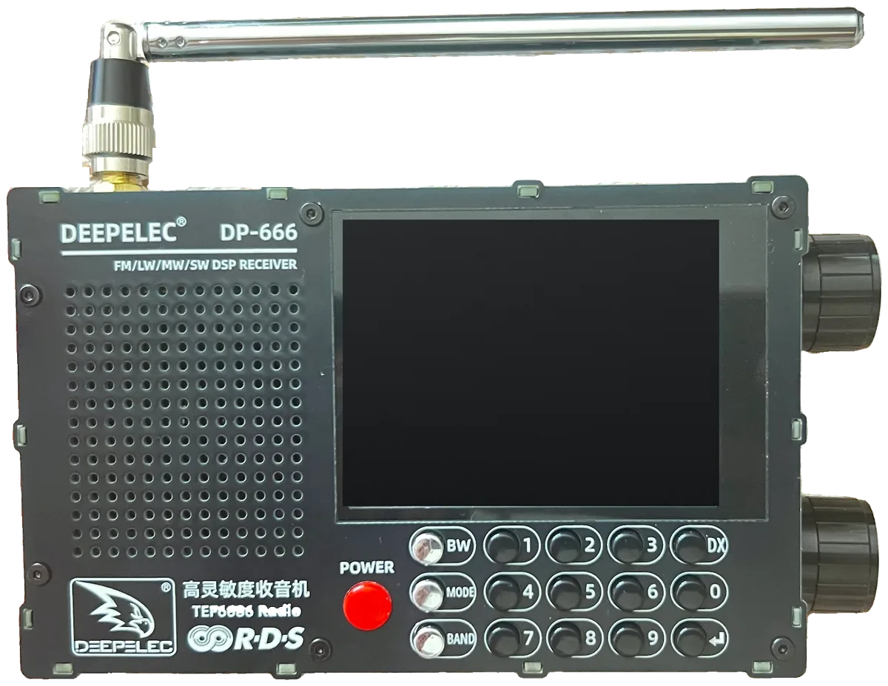
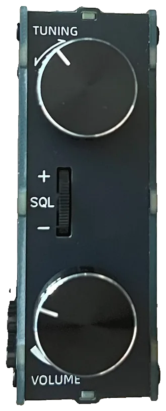

Buttons, menus, settings for Brazil and troubleshooting for the radio with the NXP TEF6686 chip.
What do you want to do?
An independent guide that brings together what is scattered across the manufacturer’s manuals, the firmware code, forums and hands-on tests, and covers both firmware lines: Megatron (the touch one, closed source) and PE5PVB’s official firmware (open source).
Tuner
NXP TEF6686
Processor
ESP32-WROOM-32U
Screen
2.8" IPS · 320×240 · touch
Bands
FM 65–108 MHz · LW · MW · SW
Battery
5000 mAh · about 15 h
Connections
USB-C · SMA · Wi-Fi
Before you tinker with the radio
This guide is not affiliated with DEEPELEC or with PE5PVB’s project. Flashing firmware, restoring settings and testing undocumented commands can erase memory channels or leave the radio not working. Always make a full backup first and proceed at your own risk.
Which firmware is on my radio?
On the startup screen: Megatron shows the DEEPELEC logo and the line "Software Ver2.00.15-Mod17 by Megatron" (the mod number changes with the version). The official firmware shows its own version, such as v2.20.
In the menu: Other settings → System information shows the version, build date, tuner and patch.
By its features: if the radio accepts touch on the screen and only has Chinese and English, it is Megatron. If the menu offers 23 languages, Portuguese among them, it is the official firmware.
Versions covered
Line
Version analyzed
Date
Megatron
2.00.15 Mod17
Apr 5, 2025
Official, DEEPELEC package
v2.20.8
Feb 21, 2026
Official, code on GitHub
v2.20.12
Nov 13, 2026
The official firmware changes often, so check the date of each page.
How to read this guide
Each piece of information shows where it comes from when that matters:
manual: it is in the official Mod17 manual.
firmware: it comes from the package, the internal strings or the Mod17 changelog. It confirms that the feature exists, but not always how it works.
base code: it is the behavior of PE5PVB v2.00, the code Megatron derives from. Megatron may have changed it.
For undocumented features, the degree of certainty shows up like this: confirmed,likely (clear name, inferred behavior) and uncertain (name only, uncertain function).
Settings that make a difference when you use the DP-666 in Brazil, with the rules behind each one. Option names are in English, as they appear on Megatron Mod17. On the official firmware the names differ a little: see the summary near the end of the page. Every possible value of each option is in Radio settings.
Unlock advanced mode first
Many options on this page only appear in advanced mode. To turn it on, DEEPELEC recommends switching the language to Chinese, turning the mode on and switching back to English: Display settings → Language → 简体中文; then 主要设置 → 系统使用模式 → 高级模式; and finally 显示设置 → 语言 → English.
FM audio
FM deemphasis at 50 µs. In the Americas the standard is usually 75 µs, but Brazil is an exception. Anatel Act No. 8,104/2022, the FM rule in force, says 50 µs should be used "preferably", and the ITU lists Brazil with 50 µs. See Standards and rules.
Use squelch at Off to hunt for weak stations. On Auto, the radio may hide distant signals.
Stereo threshold: with a weak signal, a threshold around 40 dBµV forces mono and reduces hiss.
FM band and extended FM
Set low band edge at 76.1 MHz and Set high band edge at 108.0 MHz. This way the band covers extended FM (eFM), from 76.1 to 87.3 MHz, which has had stations on the air since May 7, 2021.
Channel grid: Brazilian stations sit on 200 kHz channels with an odd decimal, from 76.1 to 87.3 MHz and from 88.1 to 107.9 MHz. Between the two ranges, from 87.4 to 88 MHz, are the community radio stations.
FM default stepsize at 200 kHz. On the official firmware, the code adds the step starting from the band edge: with the edge at 76.1 MHz, tuning stops only on odd decimals. On Megatron, check it on your radio. For DX, use 100 kHz to also stop on even decimals.
FM AGC at 92 dBµV is the most sensitive. If ghost stations show up near strong stations, try 87 or 84.
Figure 1FM bands in Brazil, according to Anatel Act No. 8,104/2022 and Resolution No. 721/2020. Channels are 200 kHz wide and end in an odd decimal (.1, .3, .5, .7, .9). RadCom is the community radio band.
AM and medium wave
MW default stepsize at 10 kHz, the medium wave grid of Brazil and the Americas.
AIR band Conversion: the option exists, but the air band only works with an external converter sold separately.
RDS
Region at Europe. Brazilian RDS follows the European model, with the PI code assigned by Anatel. The USA option uses the American table (RBDS).
Use AF at Off for DX and scanning, so the radio doesn’t jump to another frequency on its own. Day to day, only leave it on if the stations in your region broadcast alternative frequencies.
RDS time sync at Off once NTP is working, because some stations send the wrong time.
Clock and time zone
Set local time zone: pick your state’s time zone. For Brasília time, GMT−03:00.
Why the clock runs 8 hours fast: NTP delivers the time in UTC and the radio applies the time zone. Megatron is Chinese, ships with GMT+8 and has only one built-in NTP server, cn.pool.ntp.org.
Set NTP server (Mod17): a Brazilian server, such as a.st1.ntp.br, from NTP.br, answers faster. System information shows the server in use.
Wi-Fi auto disconnect at After time sync: Wi-Fi turns off after setting the clock. This saves battery and keeps the battery voltage reading, which disappears while Wi-Fi is on (see Common problems).
FM settings → Low band edge and High band edge: 76.1 and 108.0 MHz, to include extended FM. The low edge goes up 0.1 MHz and down 1 MHz per click: from 87.5, go down 12 times, to 75.5, and up 6.
FM settings → FM default stepsize: 200 kHz.
AM settings → MW default stepsize: 10 kHz. The factory default is 9 kHz, the European one.
RDS settings → Region: Europe. Leave Use AF off for DX and scanning.
Connectivity & clock → Set NTP time offset: GMT −3 for Brasília time. The factory default is GMT +1.
Auto DST on NTP time: off, because Brazil has had no daylight saving time since Decree No. 9,772 of 2019. The factory default is on.
Standards and rules
The Brazilian rules that affect how you use the radio, with the official document for each one. This is a summary for radio users, not legal advice.
FM: band, channels and pre-emphasis
Band. Anatel Resolution No. 721/2020, in force since November 3, 2020, allocates 76 to 108 MHz to FM and keeps 87.4 to 88 MHz for community broadcasting (RadCom).
Channels. Anatel Act No. 8,104/2022 numbers the 200 kHz channels: 76.1 MHz is channel 141, 87.3 MHz is 197 and 107.9 MHz is 300. That is why frequencies end in an odd decimal.
50 µs pre-emphasis. The same Act, in force since August 1, 2022, says 50 µs pre-emphasis should be used "preferably". The text of the Act writes "ms", a typo inherited from earlier versions. The rule comes from Resolution No. 67/1998, now repealed. "Preferably" leaves room for a station at 75 µs, which would sound a bit brighter on the radio.
The ITU confirms it. Recommendation ITU-R BS.450-3 lists Brazil with 200 kHz channels, 50 µs pre-emphasis and a maximum deviation of ±75 kHz. The 75 µs that appears in other Anatel rules applies to analog TV audio, not to FM.
Stereo and subcarriers. Act No. 8,104/2022 accepts modulation peaks of up to 110% (82.5 kHz deviation) and places subcarriers between 20 and 99 kHz, or between 53 and 99 kHz when the program is stereo. The pre-emphasis of the stereo signal must match that of the main signal.
AM migration. Decree No. 8,139/2013, amended in 2018, 2020 and 2021, governs the move of local AM stations to FM, with simulcasting for up to five years. Extended FM was opened to take in those stations.
RDS
Act No. 8,104/2022 includes the RDS specification in Portuguese: the PI code has 16 bits and is assigned to each station by Anatel, or by an accredited entity; PTY identifies up to 31 program types.
It is European RDS, not American RBDS, hence the Europe region on the radio. The Act’s program type table (Table A3) has not been checked item by item.
Medium wave, tropical and shortwave
Resolution No. 721/2020 keeps medium wave from 525 to 1705 kHz and the 120 m tropical band from 2300 to 2495 kHz.
Act No. 8,104/2022 uses 10 kHz spacing on medium wave, and Act No. 3,116/2020 defines classes A, B and C of MW stations.
With the migration, many local AM stations went off the air. There is no official count of how many still broadcast.
Listening
Broadcasting is free to receive. Article 57 of the Brazilian Telecommunications Code (Law No. 4,117/1962) excludes from the prohibitions radio communications intended to be freely received, amateur radio, ships and aircraft in distress and public emergencies.
Air band and other communications. Routine conversation between aircraft and the tower is not on that list. Article 56 of the same Code and Article 151, § 1, II, of the Penal Code punish anyone who discloses, passes on to others or uses the content of communications addressed to third parties. In practice: listen, but don’t record to publish or retransmit.
Transmitting is another story. Article 183 of the General Telecommunications Law (Law No. 9,472/1997) punishes unlicensed telecommunications activity. The DP-666 only receives.
Digital radio
MC Ordinance No. 290/2010 created the Brazilian Digital Radio System without choosing a standard. In 2024, the Ministry of Communications answered an information request saying there are no plans to digitize radio in the country (the answer was published by the Rádio Livre site, not by the government).
The DP-666 tuner doesn’t decode HD Radio or DRM.
Time
Decree No. 9,772/2019 ended daylight saving time across the country.
Law No. 12,876/2013 places the Federal District and states such as São Paulo in the Greenwich minus three hours time zone.
NTP.br uses the atomic clocks of Brazil’s National Observatory and runs servers such as a.st1.ntp.br.
Type approval
Anatel Resolution No. 680/2017 requires certification of restricted radiation equipment, such as the Wi-Fi and Bluetooth of the DP-666’s ESP32. The technical requirements are in Act No. 14,448/2017, with later amendments.
The DP-666 pairs an NXP TEF6686 tuner, which does all the radio work, with an ESP32 module, which handles the screen, the buttons and the connections. This page shows how the parts connect, how power and sound flow, and gives the datasheet of each part. It is based on DEEPELEC’s schematics: V2.5.3, the board of the original units (copy on device.report), and V2.5.4, published on its site.
3D board
The radio’s chips as blocks, with the audio path and the buses. It is a diagram: sizes and positions are not those of the real board.
Loading the tool… If it doesn’t open, reload the page.
Architecture
Figure 1DP-666 architecture, according to DEEPELEC’s schematics V2.5.3 and V2.5.4 and the official code. The U codes are the schematic references.
The tuner, the keypad and the clock share the ESP32’s I²C bus, each at its own address. The screen and touch use SPI. The USB-C port charges the battery and, through the CH340N, is used to flash firmware and to talk to programs on a computer.
Performance and bands
Parameter
Value
FM sensitivity
≤0.5 µV (S/N 30 dB)
SW, MW and LW sensitivity
≤10 µV (S/N 20 dB)
Selectivity
≥60 dB
FM
65 to 108 MHz, configurable edges
OIRT
30 kHz step
SW
1700 to 27000 kHz, 5 kHz step
MW
522 to 1791 kHz (9 kHz) or 520 to 1720 kHz (10 kHz)
LW
144 to 513 kHz, 9 kHz step
AIR
only with an external converter
Battery
3.7 V, 5000 mAh (18.5 Wh), about 350 mA and 15 h of use
Case: six panels made of black circuit board, with the labels printed on them: front, back, top, bottom and the two sides. Black screws and brass standoffs hold them together.
Back: this panel carries the battery and the speaker, which sits in a closed box. Both reach the board through 2-pin connectors (J1 and J5).
Main board: one side holds the ESP32 module and the tuner, under a metal shield; the other holds the screen and the front buttons. The encoder and the volume control come out through the right side, held by nuts, and the knobs just push onto the shafts.
Antennas: the SMA, on top, reaches the board through a short coaxial cable. The ESP32 is the WROOM-32U version, which has no antenna of its own: Wi-Fi and Bluetooth use an antenna linked to the module by another short cable.
Battery: a lithium-polymer cell coded 105565 (about 10 × 55 × 65 mm), 3.7 V and 5000 mAh, with a 2-pin PH-type plug. When replacing it, check the polarity before plugging it in: batteries with the same plug can come with the wires swapped.
Don’t open the radio while it is under warranty: contact the seller or DEEPELEC. Opening it takes a 0.7 mm hex key for the screws. Unplug and plug the short cables carefully, because their connector (U.FL) is rated for about 30 matings.
Power
Figure 2Power path in schematic V2.5.3. The main switch and POWER are not in the current path: both control transistor Q1, which powers the board. The charger, the clock and U1 are always connected to the battery.
The battery is always connected to three parts: the charger, the clock (when fitted) and U1, the POWER button controller. The rest of the board gets power through a transistor (Q1, SI2305), which only conducts when two conditions are met:
Main switch at ON: it is not in the current path. At OFF, it turns the transistor off, and POWER has no effect.
POWER on: each press toggles U1. The button doesn’t go through the ESP32, so it works the same on any firmware, even with the radio frozen.
After the transistor, three 3.3 V regulators split the load: U5 powers the processor, U32 the screen and U6 the tuner, which also separates its analog and digital parts with filters. The speaker amplifier runs straight from the battery voltage.
Charging: the TP4056 (U20) charges the battery at about 0.9 A, a value set by resistor R104, 1.3 kΩ. That is why a 1 A charger is enough, and a full charge takes more than 5 hours. Since the charger sits before the transistor, the battery charges with the switch at OFF.
USB-C: the port has the 5.1 kΩ resistors that USB-C chargers require, so a USB-C to USB-C cable also works. The USB-serial bridge (CH340N) is powered by the cable, not by the battery.
Temperature: the TP4056’s temperature sensing isn’t used, so charging doesn’t stop if the battery heats up. Charge it away from the sun and from heat sources.
Charge LED: a dual LED behind a light guide. According to schematic V2.5.3, it is red while charging and blue when done.
Battery reading: two 100 kΩ resistors deliver half the voltage to GPIO 13.
Sound path
Figure 3Sound path in schematic V2.5.3. The volume control is analog and sits ahead of both amplifiers. The headphone jack itself picks the output: with a plug in, the contact between pins 6 and 2 opens, turns U4 on and, through a transistor, turns U2 off.
Audio leaves the TEF6686 already in analog form, from its internal converter, and the ESP32 has no access to the sound. That is why Wi-Fi and Bluetooth don’t carry audio.
Volume: VOLUME is a 10 kΩ dual potentiometer between the tuner and the amplifiers, and it applies to both headphones and speaker. Leave the firmware volume at 0 dB and adjust with it.
Headphones: the MAX97220 (U4), powered at 3.3 V, delivers stereo sound to the 3.5 mm jack.
Speaker: the TPA6211A1 (U2) mixes the left and right channels, so the speaker plays in mono. It is powered straight from the battery.
Output switching: the headphone jack itself does it, without the firmware. With no plug, an internal contact between pins 6 and 2 of the PJ-3270 keeps the speaker on. With a plug, the contact opens: the headphone amplifier turns on and a transistor (QA3) turns the speaker amplifier off.
This explains the speaker that stays silent after using headphones: if the contact between pins 6 and 2 doesn’t close again, the circuit acts as if a plug were still in. That is why DEEPELEC says to clean exactly those two pins.
Antenna
The specifications only mention the external antenna on the SMA connector. There is no internal ferrite antenna, so AM depends on an external wire or loop.
On the board, the SMA’s short cable reaches a U.FL connector (J7). Right at the input, a diode (D4) protects the tuner from electrostatic discharge, and the signal splits into an FM input and an AM input. If the signal suddenly disappears, this cable may have come loose.
Pins and addresses
Checked against schematic V2.5.3 and the official code.
Function
Connection
Encoder
A on GPIO 34, B on 36 and the push on 39
BAND, BW and MODE
GPIO 4, 25 and 26 (the schematic calls 4 STB)
Squelch potentiometer
GPIO 35
Battery reading
GPIO 13
I²C
SDA on GPIO 21 and SCL on 22
Screen and touch SPI
MOSI on GPIO 23, MISO on 19 and clock on 18
Screen: CS, DC and RST
GPIO 5, 17 and 16
Screen backlight, PWM
GPIO 2
Touch: CS and interrupt
GPIO 32 and 33
Keypad interrupt
GPIO 14
Tuner crystal
GPIO 15
BOOT
GPIO 0
CH340N serial
UART0 (TX0 and RX0)
Tuner
I²C 0x64 (0x65 on some modules)
Keypad (XL9555)
I²C 0x20
Clock (RTC)
I²C 0x32
Battery and Wi-Fi: GPIO 13 uses the ESP32’s ADC2 converter, which doesn’t work while Wi-Fi is on. That is why the battery reading disappears when Wi-Fi is active, on both firmwares.
Crystal: the code reads the voltage on GPIO 15 to learn the tuner’s crystal. On V2.5.3, a resistor to ground holds the pin at 0 V, which means 9.216 MHz. On V2.5.4, a second resistor brings the pin to about 1.1 V, which means 12 MHz.
Flashing: the CH340N can’t reset the ESP32 by itself, because its RTS# pin is left unconnected. That is why flash mode needs BOOT pressed by hand.
POWER: it isn’t in the table because it doesn’t reach the ESP32. It acts directly on the power supply.
Analog S-meter: the official code sends the signal level as PWM on GPIO 27, for a needle meter. On the DP-666, this output (METER-DRV in the schematic) goes to no connector. GPIO 12 is unconnected.
Components and datasheets
The codes U2, U3 and so on are the schematic references, the same in V2.5.3 and V2.5.4. When the manufacturer doesn’t publish the document, the link points to a mirror and the link name says so.
TEF6686HN/V102
U7
DSP tuner: AM and FM reception, RDS and audio
NXP · I²C 0x64 · marked F8602, patch 102 · 9.216 MHz crystal on V2.5.3 and 12 MHz on V2.5.4
The schematic also uses generic transistors, from several manufacturers: the SI2305 (Q1, P-channel MOSFET), which powers the board; the SS8050 (Q3, NPN), which drives the screen backlight; and the WNM2030 (QA3, N-channel MOSFET), which shuts down the speaker amplifier when headphones go in.
Board revisions
The notes for each version come from the schematics themselves: V2.5.3 carries those from v2.5.1 to v2.5.3, and V2.5.4 repeats them and adds its own.
Original: DEEPELEC says the original units use board V2.5.3, printed Mini6686-V2.5.3.
v2.5.1: the speaker’s input capacitors (C51 and C9) went from 0.1 to 0.33 µF. As a result, the frequency below which bass is cut drops to about a third.
v2.5.2: C15, 1 µF, was added to the ESP32’s EN pin. It is the capacitor Espressif recommends to delay the reset at power-up.
v2.5.3: the clock (RTC, U11) was added.
v2.5.4: this is the schematic version DEEPELEC publishes; the radio’s page doesn’t say from when units ship with it. The clock became the RS4C8010BW, compatible with the RX8010SJ. R33, between the main switch and the transistor that powers the board, went from 1 kΩ to 100 kΩ, which makes that transistor switch on and off more slowly. And the tuner moved to a 12 MHz crystal, instead of the 9.216 MHz one; the new R49, 20 kΩ, tells the firmware through GPIO 15. Both the official code and the DP-666 project’s code read this pin, so they adapt to either board on their own.
Clones: board V2.5 shows up in clones such as SPARKELEC’s, without an RTC. What is different about them is in Clones, under Common problems.
Internal clock: only units shipped from April 1, 2025 have an RTC. Since schematic V2.5.3 already includes it, earlier V2.5.3 boards likely have an empty spot for it, which fits DEEPELEC’s suggestion that owners fit the chip themselves; it doesn’t offer this upgrade. Schematic V2.5.3 and the announcement call the chip RX8010SJ.
RTC test
To find out whether your unit has an internal clock: set the time, turn the main switch off for 1 minute and turn it back on with Wi-Fi off. If the time is still right, there is an RTC.
The RTC is powered straight from the battery, before the main switch, and has no battery of its own. So it keeps the time with the switch at OFF, but loses it if the battery is disconnected or fully drained.
According to DEEPELEC, on Megatron, setting the clock’s date and time requires the Mod17 of April 5, 2025 (package TEF6686_ESP32_2.0.15mod17-20250405). On the official firmware, support came with package v2.20.8.
Reference images
Third-party photos are copyrighted, so the guide doesn’t copy them: each item below opens the image or the page on the original site.
Schematic V2.5.4Full schematic: radio, processor, audio and power (PDF)PDF · DEEPELEC · all rights reserved, opens on the original site
Schematic V2.5.3Board of the original units, with the notes from v2.5.1 to v2.5.3 (PDF, copy)Page · device.report · all rights reserved, opens on the original site
Disassembled unitBoard, panels, battery and speaker, by Guido SchotmansPage · wijnants.info · all rights reserved, opens on the original site
Screen sideThe board flipped over and the small plastic piece against the encoder errorPage · wijnants.info · all rights reserved, opens on the original site
Where the insulator goesThe spot between the encoder’s solder joints and the screen contactsPage · wijnants.info · all rights reserved, opens on the original site
Current line, four colorsLook sold since July 2025Image · DEEPELEC · all rights reserved, opens on the original site
Box contentsItems that come with the radioImage · DEEPELEC · all rights reserved, opens on the original site
Serial labelsOld and new label, with QR codeImage · DEEPELEC · all rights reserved, opens on the original site
March 2025 caseVersion with rounded cornersImage · DEEPELEC · all rights reserved, opens on the original site
Launch caseSeptember 2024 version, with square cornersImage · DEEPELEC · all rights reserved, opens on the original site
Board and exteriorGallery with the Mini6686 V2.5 board and the schematicPage · Radiomuseum.org · all rights reserved, opens on the original site
Review with photosThe radio in use, by Jock Elliott (KB2GOM)Page · SWLing Post · all rights reserved, opens on the original site
Review with photosThe radio in use on FM, by James CridlandPage · james.cridland.net · all rights reserved, opens on the original site
SPARKELEC cloneBox, sides, top and back of a clonePage · Blog or Die! · all rights reserved, opens on the original site
Controls, tuning, memory channels and searches on Megatron Mod17. When a behavior comes from the code of PE5PVB v2.00, Megatron’s base, it is marked base code. For the official firmware, see Using the official firmware.
Radio controls
Tap or hold each button and knob to see what it does on your firmware, in 3D or in the simple view.
Loading the tool… If it doesn’t open, reload the page.
Where everything is
Downloads about 860 KB only when you ask. Works on phones and computers.
Figure 1The radio in 3D, built from the photos below: a box with the body’s dimensions, the photo of each side on it, and the knobs and the antenna connector in 3D. The antenna itself shows only in the photos.

FrontBackLeft side

Right sideTop, seen from above with the front facing downBottom, seen with the front facing up
Photos: mflipe, under the CC BY 4.0 license.
Side
What is there
Front
touchscreen, numeric keypad (0 to 9, DX and Enter), BW, MODE, BAND, POWER and speaker
Right side
top to bottom: TUNING, the SQL wheel (+ at the top, − at the bottom) and VOLUME
Left side
top to bottom: BOOT (marked ESP32 BOOT), 3.5 mm headphone jack, charging LED and USB-C (marked DC-IN 5V)
Top
SMA antenna connector, marked ANT, near the left side, and a grid of twelve holes next to it
Back
label with the bands, the battery and the power input
Bottom
main switch, marked Main switch: ON toward the left side, OFF toward the right; and a grid of holes below the speaker
Physical keypad firmware
0 to 9: enter the frequency. The band and the frequency turn green while you type.
Enter: confirms. Outside of entry, it acts like the knob button.
DX while typing: deletes the last digit; a long press clears everything.
DX: switches between entering a frequency and saving a memory channel.
Long DX: starts the DX scan, only on the main screen. Any key cancels.
Short 0, outside of entry: toggles mute.
Screen and touch
Touch areas: the left half of the signal area opens the shortcuts and the right half opens the menu. The volume adjusts by tapping the halves of the volume area.
These open the on-screen keypad: the frequency, the step bar and the band label.
Tappable icons: MAN/AUTO/MEM, stereo, mute, RDS (opens the advanced view), bandwidth (includes AUTO BW), iMS, EQ, deviation indicator, battery and sleep.
Squelch by touch: tap SQ (it turns green) and turn the knob. Requires Rotary adjust squelch on.
Extra gestures firmware: tapping the top left corner turns on the still screen; a long press on the clock syncs the time; tapping AUTO on SW turns on the meter bands; on the advanced RDS and AF pages, tapping the bottom half switches between them.
Colors firmware: a signal from 60 up turns red, from 40 up green and below that yellow. The battery gets a red frame at 3.3 V. With Wi-Fi, the icon shows "wifi" in place of the battery.
Tuning
Steps: FM accepts 50, 100 or 200 kHz. The bar above the frequency shows the active step; fully off means the default step. In the base code, the knob cycles through the default step, 10 kHz, 100 kHz, 1 MHz and 10 MHz.
AUTO: in the base code, the search stops on a signal with little noise and little multipath, an offset of up to ±8 kHz and above the squelch. Higher sensitivity makes the search more permissive.
Bandwidth on FM: AUTO, 56, 64, 72, 84, 97, 114, 133, 151, 168, 184, 200, 217, 236, 254, 287 and 311 kHz. On AM: 3, 4, 6 and 8 kHz.
iMS and EQ: FM multipath suppression and channel equalization.
Squelch (Use squelch): On, Off or Auto. On On base code, the minimum is OFF and the maximum becomes "ST", which only opens with a stereo signal. Auto is Megatron’s own algorithm. For weak signals, use Off.
MPX output: Audio output set to MPX delivers the raw multiplex signal, for external decoders. It is not for listening.
Memory channels
Capacity: 99 positions. Each one stores band, frequency, bandwidth and stereo/mono base code. There are also names per frequency (My frequency name).
Save: tune in, press MODE until MEM appears, press the knob (MEM turns red), pick the position and press again. A red number means the position is taken; green, free.
Recall: in MEM, turn the knob.
Delete one: on the on-screen keypad, use MEM/Delete in MEM mode, pick the position and confirm firmware. Try it first on an unimportant position.
Arrange stations: "brokens" are gaps in the list. Only defrag closes the gaps; Defrag and sort also sorts and removes duplicates.
Delete stations erases the whole band
Delete stations doesn’t erase a single memory channel. It asks for the band and empties all of its channels. Auto search in Overwrite also overwrites everything. Only a backup gets them back.
Band save mode firmware: stores the memory channels together (Mixed Save), per band (Save by band) or per time slot (Save by time segment).
Auto search
Options: save mode, band, samples and hold time, multipath limit, sensitivity (FM from 1 to 15, AM from 1 to 20), Quality or Quantity priority, saved bandwidth, mute and screen off during the search, start channel and SW limits.
Save modes: Overwrite, Append and Continuously append. The third one only shows up in the firmware.
"99 Free": "Free" shows the available positions. In Overwrite, all 99 count as free because they will be overwritten.
Use Append, with the start channel after the last memory channel.
Use Quality priority and FM sensitivity between 3 and 5. In the base code, a lower number is more demanding.
Use 5 to 10 samples and a hold time of 100 to 200 ms.
Keep the screen off and AF off during the search.
DX scan (Frequency scanning)
Options: band, start and end channel, wait time, Exclude/Only, cancel on Signal, Off or Correct PI, Stay/Break, mute and screen off. The firmware adds Wait on signal only and Hold time.
Only base code: goes only through the occupied memory channels between the start and the end channel.
Exclude base code: scans the band step by step, without using the memory channels.
Correct PI stops when it decodes the PI. Signal stops when it finds a clean signal.
The scan doesn’t save anything. Any key or tap cancels it.
Every menu option on both firmwares, with its possible values, the factory default, what it does and the recommended value for Brazil. On Megatron, many options only show up in advanced mode: see how to turn it on in Setup for Brazil.
Loading the tool… If it doesn’t open, reload the page.
Connected to a computer, the DP-666 gets a big screen. You can tune with the mouse, see which frequencies have a signal, read RDS in detail, keep logs, listen to the radio from a browser anywhere and update the firmware. Commands and data travel over the USB-C cable or over Wi-Fi. Sound travels over neither: to listen on the computer, you need an audio cable.
If the program names, or terms such as RDS, COM port and baud, are new to you, start with What each thing is.
Figure 1Control and sound through the computer. The radio’s Wi-Fi does not carry audio: sound goes by cable to the sound card, and fm-dx-webserver brings control and audio to the browser.
What it is for
What you want
Program
Connection
Control the radio from the computer, with the band graph and RDS on the screen
Each name is explained here once. The rest of the page uses the same names.
The programs
XDR-GTK: a free program that turns into the radio’s control panel on the computer, for Windows and Linux. The name tells the story: it was born for the Sony XDR-F1HD, a hi-fi tuner that radio fans modified to control from a computer. GTK is the library used to draw the program’s windows. Today it also accepts radios with the TEF6686 chip, such as the DP-666. It was created by Konrad Kosmatka and Mateusz Walkowiak.
RDS Spy: a free Windows program that decodes and analyzes RDS, the digital data stations send along with the sound (see below). The name fits what it does: it shows everything the station transmits, including what a regular radio doesn’t display. It comes from PIRA.cz, which makes RDS encoders for stations.
FMDX and FM-DX Webserver: FMDX is the community of people who do FM DX (see below), gathered at fmdx.org. FM-DX Webserver is that community’s free program that puts the radio on a web page: from the browser of any device, you hear the sound and control the radio. It was created by Marek Farkaš.
xdrd: a helper program, with no window, that puts a radio on the network for XDR-GTK and FM-DX Webserver. With the DP-666, you don’t need it: over Wi-Fi, the radio itself plays that role, and over the cable the programs talk to it directly.
StationList: a computer program that receives the tuned station’s data over Wi-Fi and builds a list of stations.
TEF Logger App: an Android app to follow and log receptions from radios with the TEF chip that run the official firmware.
PuTTY: a free Windows program that opens a terminal (see below) on a serial port or a network connection.
esptool: a tool from Espressif, the maker of the radio’s processor, to copy and flash the firmware. See Backup and flashing.
Radio terms
DX: a telegraph-era abbreviation for "distance". Doing DX is the hobby of picking up and identifying distant or weak stations. On FM, many arrive from far away only under special atmospheric conditions. People who do it are DXers.
RDS (Radio Data System): digital data an FM station sends along with the sound, in a part of the signal you can’t hear. RDS is what puts the station name and the song playing on the display. The parts that appear on this page:
PI: a 4-character code that identifies the station, like an ID card. Since it goes in every RDS packet, it is usually the first data to show up with a weak signal, and it is what DXers use to find out which station they are hearing.
PS: the station name on the display, up to 8 characters.
RadioText (RT): free text of up to 64 characters, such as the song name or a message.
RT+: marks, inside the RadioText, which part is the song title and which is the artist.
PTY: the program type, such as news, sports or rock.
AF: a list of alternative frequencies of the same station, so the radio can switch on its own when the signal gets worse.
CT: the correct time, sent by the station.
EON: data about other stations of the same network.
Group: each RDS data packet. Each group type carries one type of information.
Spectrum and scan: the spectrum is a graph of the whole band, with the signal strength at each frequency; each peak is a station. The scan is the radio going frequency by frequency to draw that graph.
Multipath: the signal arrives by two paths at the same time, direct and reflected off buildings or hills, and gets scrambled. It causes hiss and distortion.
Filter (bandwidth): how wide the radio opens around the tuned frequency. A narrow filter separates neighboring stations; a wide one gives better sound.
Antenna pattern: the map of how much a directional antenna picks up in each direction.
Logbook: the log of the stations received, with date, time, frequency and RDS.
Firmware: the program that runs inside the radio. The DP-666 has two lines, Megatron Mod17 and the official one; see Megatron vs. official.
The other reception settings XDR-GTK controls, such as AGC, deemphasis and softmute, are explained in Radio settings.
Computer terms
Driver: a program that teaches the computer to talk to a chip. Here, the CH340, which sits inside the radio and turns USB into a serial port.
Serial port or COM port: the conversation channel the computer creates when you connect the radio with the cable. On Windows, each port gets a number (COM3, COM5…); on Mac and Linux, a name such as /dev/ttyUSB0. Programs ask for that number to know which device to talk to.
Baud: the speed of the conversation over the serial port, in bits per second. The program and the radio must use the same one; otherwise garbled letters or nothing arrives.
IP: the address of each device on the network, such as 192.168.0.31. The router gives the radio an IP address when it joins the Wi-Fi.
Network port: a number that says which program, inside the device, receives the connection. If the IP is the building’s address, the port is the apartment. The radio answers XDR-GTK and RDS Spy on port 7373.
TCP and UDP: two ways of sending data over the network. TCP confirms each delivery and keeps the conversation open, as with XDR-GTK. UDP just sends, without waiting for an answer, as with StationList.
Firewall: the computer’s doorman, which blocks unknown connections. Sometimes you need to allow a program or a port.
Terminal: a window where you type commands instead of clicking. On Windows, Command Prompt and PowerShell are terminals; PuTTY is a terminal for serial ports.
Node.js and npm: Node.js is the engine that runs programs written in JavaScript outside the browser, such as FM-DX Webserver. npm comes with it and downloads the pieces the program needs: that is what the npm install command does.
Server and localhost: a server is a program that waits for other devices to connect so it can answer them. localhost is the name the computer uses for itself: http://localhost:8080 opens the page the computer itself serves, on port 8080.
Public IP, tunnel and VPN: the public IP is your home’s address on the internet, given by your provider. Opening a port on the router, or using a tunnel, lets anyone on the internet reach the server. A VPN does the opposite: it puts your phone, from far away, inside your home network, without exposing the server.
tef.local: the name the official firmware radio announces on the network, so you don’t need to know its IP address. If it doesn’t open, use the IP address.
CSV: a text file with the data separated by commas, which any spreadsheet opens.
Before you start
Cable: use a USB-C cable that carries data. Many cables only charge: if the computer doesn’t react when you connect the radio, swap the cable before touching anything else.
Driver on Windows: inside the radio, a CH340 chip bridges USB and the processor. Windows Update usually installs the driver on its own. If it doesn’t, use DEEPELEC’s CH340 driver. The radio shows up in Device Manager, under Ports (COM & LPT), as "USB-SERIAL CH340" followed by the port number, such as COM5. Write that number down.
Driver on Mac and Linux: Linux already includes the driver, and the port shows up as /dev/ttyUSB0. The Mac also recognizes the chip on its own, with the port /dev/cu.usbserial followed by a number. If the connection fails on the Mac, install the WCH driver and allow it in System Settings → Privacy & Security. With it, the port becomes /dev/cu.wchusbserial followed by a number.
Sound: connect a 3.5 mm to 3.5 mm cable from the radio’s headphone output to the computer’s line input, or to a USB sound card. Prefer a stereo input: many cheap USB cards only have a mono microphone input, and the sound arrives in mono.
Wi-Fi: only 2.4 GHz networks work, and the radio and the computer need to be on the same network. To put the radio on the network, use the on-screen keypad or a browser: connect to the radio’s ESP_… network and open http://192.168.4.1. Mod17 stores up to 3 networks. The radio’s IP address shows up on Mod17 in Other settings → System information and, on the official firmware, next to Wi-Fi, in the Connectivity & clock group.
Battery with Wi-Fi: with Wi-Fi on, the radio doesn’t measure the battery, and the indicator and the low battery protection stop working. Over the cable, with Wi-Fi off, it doesn’t happen. If Wi-Fi is only for setting the time, set Wi-Fi auto disconnect to After time sync.
One program at a time: the radio serves one program at a time. To use XDR-GTK and RDS Spy together, connect RDS Spy through XDR-GTK, as explained below.
Menu closed: with the menu open, the radio ignores commands from the computer.
If it doesn’t work: the most common causes, such as the computer not seeing the radio or the program connecting without receiving anything, are in the Common problems assistant.
Preparing the radio
Setting
Megatron Mod17
Official firmware
USB port mode
Connectivity → USB mode
Connectivity & clock → USB mode
For XDR-GTK and FM-DX Webserver
XDRGTK
XDRGTK (the port switches to 115200 baud)
For RDS Spy over the cable
RDS Spy
RDS Spy (the port switches to 19200 baud)
Password for Wi-Fi connections
Connectivity → Set XDRGTK password, up to 8 characters
On the page that opens in Configure Wi-Fi, the XDRGTK password field, up to 8 characters. It comes set to "password"
Turn the screen off during the session
Connectivity → Screen off on XDRGTK
Connectivity & clock → Mute screen on XDRGTK connection
Turning the screen off during the session is worth it: you already see everything on the computer, and a dark screen saves battery and stops creating noise in the radio. On the official firmware, it comes back when the connection ends.
What you can control remotely
On Mod17, remote control uses the XDR-GTK protocol, over Wi-Fi (TCP port 7373, with a password) or over USB (no password, with USB mode set to XDRGTK).
You can control
You can’t
frequency on FM, MW, LW and SW; seek up and down; switching between FM and AM
menus and settings (Wi-Fi, time zone, themes, memory channels)
bandwidth, AGC, deemphasis, stereo/mono, iMS/EQ and softmute
turning the radio on remotely (only with a timer or schedule set on it)
volume, mute and squelch, including the automatic one
receiving the audio over the network
spectrum scan and starting or stopping the DX scan
using it with the menu open (commands are ignored)
turning the screen off during the session (Screen off on XDRGTK)
more than one program at the same time
The radio also sends the signal, stereo, multipath, C/N and all the RDS in real time.
XDR-GTK
What it is for: it is the radio’s control panel on the computer, made for DXers. You tune with the mouse and the keyboard, change the reception settings (filter, AGC, deemphasis, stereo and softmute) and follow the signal strength, multipath and RDS on a graph. The spectrum scan draws the whole band and shows the occupied frequencies at a glance. It also measures the pattern of a directional antenna. It runs on Windows and Linux and is free.
Connect the radio to the computer with the cable and open XDR-GTK.
In the connection window, choose the radio’s serial port (the COM you wrote down) and connect. Over the cable, there is no password.
XDR-GTK starts showing the signal and RDS. On the official firmware, the radio switches to FM when it connects.
Over Wi-Fi:
Connect the radio to your network and set the XDR-GTK password (see the table above).
In XDR-GTK’s connection window, choose TCP/IP, enter the radio’s IP address, port 7373 and the password.
XDR-GTK and RDS Spy at the same time
XDR-GTK passes RDS on to RDS Spy. Turn on the RDS Spy button in XDR-GTK. In RDS Spy, choose Configure → Select RDS Source → ASCII G Protocol, with the TCP/IP connection on port 7376. RDS Spy only receives the groups that arrived without errors.
RDS Spy
What it is for: it decodes everything the station sends over RDS, group by group: the PI code, the name (PS), the RadioText, the program type, the alternative frequencies, the time, data about other stations of the network (EON), RT+ and the extra applications, plus the error count. It also records logs. It is the classic tool to identify a weak station by its code and to check whether a station’s RDS is right. It is free and only runs on Windows.
Works with: both firmwares. From RDS Spy, you can also change the FM frequency.
Over the USB cable:
On the radio, set the USB port mode to RDS Spy and close the menu.
In RDS Spy, open Configure → Select RDS Source and choose ASCII G Protocol.
Choose the serial port connection, with the radio’s COM and 19200 baud.
Over Wi-Fi: in the same source (ASCII G Protocol), choose the TCP/IP connection, with the radio’s IP address and port 7373. The USB port mode doesn’t matter in this case.
FM-DX Webserver
What it is for: it turns a computer connected to the radio into a server. Any device in the house, including phones and the iPhone, opens the radio in the browser, hears the sound and changes the frequency, the filter and the rest. With internet access, you can listen to your radio from far away, for example by leaving it at home with a good antenna. The server can also join the FMDX community’s public map, so other people can listen, and it has an admin panel, chat and plugins.
Works with: the official firmware, which the project declares compatible. On Mod17, compatibility is likely but not confirmed.
What you need: a computer with Windows or Linux, the systems the project lists, that stays on while the server is up (a mini PC will do), the USB cable and the audio cable.
On the radio, set the USB port mode to XDRGTK and close the menu.
Plug in the USB cable and the audio cable, from the radio’s headphone output to the computer’s sound input. Start with the radio’s volume at half.
Open a terminal in the program’s folder and run npm install and then npm run webserver. Leave that window open: closing it shuts the server down.
In the browser, open http://localhost:8080/setup. Choose the direct connection through the radio’s serial port, without the xdrd helper program. Choose the sound input the cable is plugged into and set an admin password.
Open http://localhost:8080 to listen. On the other devices in the house, use the computer’s IP address with port 8080, such as http://192.168.0.20:8080.
Before opening the server to the internet
For access from outside the house, you need a public IP with the port forwarded on the router, or a tunnel. An open server lets anyone listen to stations through your radio, and relaying the programming over the internet may run into the rights of the stations and the authors (in Brazil, Law No. 9,610/1998; elsewhere, your local copyright law). To join the map, follow the FMDX community’s rules. To listen from afar just for yourself, prefer a VPN into your network instead of opening the port.
StationList
What it is for: over Wi-Fi, the radio sends the StationList program, on a computer on the same network, the data of each tuned station: frequency, signal strength, filter, PI code, name, program type, RadioText and alternative frequencies. The program builds the station list and can ask the radio to change frequency.
Works with: both firmwares.
Turn on the radio’s Wi-Fi.
On the official firmware, in Stationlist client IP, enter the last number of the computer’s IP address. If the computer is 192.168.0.25, use 25. On Mod17, the setting is Connectivity → Stationlist client IP.
If there is more than one radio, give each one a number in Stationlist ID.
In the computer’s firewall, allow incoming traffic on UDP port 9030. The radio receives the program’s requests on port 9031.
We didn’t find an official StationList page. The data above comes from the firmware code.
Logbook, memory channels and time
Official firmware over Wi-Fi: with the radio on the network, open the radio’s IP address in a browser, such as http://192.168.0.31, or http://tef.local. The page shows the logbook, with the stations you logged by holding the encoder (see Using the official firmware), and has a download button that saves everything to a CSV file you can open in any spreadsheet.
Over the cable, in a terminal: the terminal is a program that sends and receives text through the radio’s port. On Windows, use PuTTY: choose Serial, the radio’s COM port and the speed of the USB mode (115200 in XDRGTK, 19200 in RDS Spy). On Mac and Linux, the command screen /dev/ttyUSB0 115200 does the same; replace it with your port’s name. Then type the command:
Official firmware:L (or l) returns the logbook as CSV. s lists the 99 memory channels, and S saves a memory channel (position, frequency, filter, mono/stereo, PI and PS) and answers with an error code, in the format of PE5PVB’s memory protocol. These commands only work over the cable.
Megatron, with the USB mode set to XDRGTK:$time: 14:30:00 sets the clock without Wi-Fi; $name: MY RADIO gives the radio a name, which appears on the startup screen and at the bottom when there is no RadioText; $reboot restarts it. The simplest way is to use the .bat files that come in the firmware package, on Windows.
Don’t test undocumented commands
Mod17 has internal commands that can erase settings and memory channels (see Hidden features of Mod17). Only use the commands above and make a backup before trying anything else.
From a phone, without a computer
Android: the TEF Logger App receives the radio’s data over Wi-Fi, with the official firmware v2.20 or newer, to follow and log receptions.
iPhone: there is no app that talks to the radio directly, and the iPhone can’t use the DP-666’s USB-serial adapter (CH340). The way to go is FM-DX Webserver on a computer, opened in the iPhone’s browser.
Bluetooth
Audio: it doesn’t work. The firmware has no audio profiles, so Bluetooth headphones and speakers don’t connect. If you want Bluetooth audio, you need another radio (see Comparison).
Mod17: uses Bluetooth only for the "slave host" function, in which the radio connects to another device and controls it. The firmware asks you to turn Wi-Fi off first.
Problems acknowledged by DEEPELEC, reported by the community or anticipated in the firmware code. Pick what is happening and follow the steps, from the simplest to the most involved. Before any repair or reflash, make a full backup.
Loading the tool… If it doesn’t open, reload the page.
The DP-666 accepts two firmware lines. Switching from one to the other is not an update: menus and features change and the settings are reset.
The two lines
Megatron: third-party firmware, closed source, focused on touch. According to DEEPELEC, it supports the physical keypad, reduces screen interference, improves MW and SW and only has Chinese and English. Published versions: mod15 (Oct 22 and Nov 3, 2024), mod16 (Feb 18, 2025) and mod17 (Apr 5, 2025, with RTC support). Judging by its internal strings, it was built on PE5PVB’s code from the v2.00 era, from December 2023.
Official firmware (PE5PVB): open source (GPLv3), with 23 languages, Portuguese and English among them. DEEPELEC’s packages range from v2.11.3 (August 2024) to v2.20.8 (February 2026, with RTC). On GitHub, the code is at v2.20.12, from Nov 13, 2026.
Megatron Mod17
Pros
Points highlighted by DEEPELEC: physical keypad support, less screen interference and better MW and SW listening.
Features the official firmware doesn’t have: auto search schemes, reception plans with times to turn on and off, time-based memory channels (TTM), names per frequency, notifications, automatic theme switching and still screen. See Hidden features of Mod17.
Cons
Closed source and no updates: the newest published version is mod17, from Apr 5, 2025. On Oct 9, 2026, a DP-666 owner asked on GitHub where to find a newer Megatron and got no answer.
Languages: only Chinese and English.
No recovery for a stuck tuner: the official firmware got that fix on Nov 13, 2026 (see "Tuner: !None!" in Common problems).
Uncertain integrations: fm-dx-webserver compatibility arrived in the official firmware in v2.10, after Megatron’s base. Mod17 has some of those commands, but use with XDR-GTK and fm-dx-webserver has not been confirmed.
Official firmware (v2.20.x)
Pros
Open source and active development, with menus in 23 languages.
DP-666 support: the firmware detects the keypad on its own at power-on, package v2.20.8 brought the RTC and several keypad fixes arrived in November 2026.
Features Megatron doesn’t have: a station log (logbook), saving memory channels from a PC and declared support for XDR-GTK and fm-dx-webserver.
Recovery for a stuck tuner: in the code since Nov 13, 2026.
Cons
You lose Megatron’s exclusive features.
A different interface: screens, menus and touch areas change, and touch has to be calibrated again.
Nothing carries over: settings and memory channels don’t move from one firmware to the other. If Mod17 answers the s command over USB, you can export the list of memory channels first.
Ready-made package only up to v2.20.8, from Feb 21, 2026. Later fixes only arrive by compiling the code (Arduino IDE or PlatformIO) or with a new package.
Compiling for the DP-666
In the official code, the DP-666 defaults (Portable touch model, rotated screen, encoder direction and colors) only come if the build defines the DEEPELEC_DP_66X option. Without it, those items have to be set by hand after flashing. The step-by-step is in Backup and flashing, and everyday use in Using the official firmware.
Export the memory channels with the s command over USB or take a photo of the list.
Flash the official firmware package from DEEPELEC’s site: main switch ON, hold BOOT, press POWER and run flash.bat.
Check that the model is set to Portable touch (Device settings), calibrate touch (power on holding BW + MODE) and set up Wi-Fi again.
To go back, flash the backup. The radio returns exactly as it was, with the previous firmware, settings and memory channels.
Firmware screens
The screenshots published by DEEPELEC are copyrighted, and the license of the images on PE5PVB’s wiki isn’t explicit. So the guide doesn’t copy them: each item below opens the image on the original site. There are no published screenshots of v2.20.12.
Megatron, main screenMod17 interfaceImage · DEEPELEC · all rights reserved, opens on the original site
Megatron, other screensMod17 interfaceImage · DEEPELEC · all rights reserved, opens on the original site
Megatron, menu in EnglishMod17 main menuImage · DEEPELEC · all rights reserved, opens on the original site
Megatron, additional screenMod17 interfaceImage · DEEPELEC · all rights reserved, opens on the original site
Megatron, touch areasMap of the touch-sensitive areasImage · DEEPELEC · all rights reserved, opens on the original site
Official v2.20.x, screen 1Main screen of the official firmwareImage · DEEPELEC · all rights reserved, opens on the original site
Official v2.20.x, screen 2RDS or menu screenImage · DEEPELEC · all rights reserved, opens on the original site
Official v2.20.x, screen 3RDS or menu screenImage · DEEPELEC · all rights reserved, opens on the original site
Official v2.20.x, photo of the screenPhoto of the radio with the official firmwareImage · DEEPELEC · all rights reserved, opens on the original site
Mod17 manualAnnotated screens, on-screen keypad and shortcuts (PDF)PDF · DEEPELEC · all rights reserved, opens on the original site
Official firmware v2.11 manualv2.11 screens and menus (PDF)PDF · DEEPELEC · all rights reserved, opens on the original site
PE5PVB wikiv2.x main screen and advanced RDSPage · PE5PVB/TEF6686_ESP32 · all rights reserved, opens on the original site
Buttons, power-on combinations, memory channels, the DX scanner and the logbook of PE5PVB’s official firmware. The full menu is in Radio settings. It is based on the project wiki, checked against the code of v2.20.12, from Nov 13, 2026. Where the two differ, the guide follows the code and says so. For Megatron, see Using the radio.
Incomplete wiki, firmware without warranty
The author himself warns that the wiki is still under construction and may not cover everything. The firmware is distributed without any warranty, and whoever flashes it takes the risk.
What the official firmware does
Bands: FM from 65 to 108 MHz and AM from 144 kHz to 27 MHz.
Connections: RDS Spy, XDR-GTK, fm-dx-webserver and StationList over Wi-Fi (see Computer and connectivity).
Features: almost all of RDS, with an advanced RDS screen; automatic and manual search; squelch; battery, S-meter and modulation meter on the screen; themes; 23 languages; automatic switching to the alternative frequency (AF); 99 memory channels; and a station log (logbook).
Only on the TEF6687 and TEF6689 chips: the full RDS search (FullSearch RDS) and the FMSI stereo improvement. The DP-666 uses the TEF6686, so these two functions don’t exist on it.
Buttons
In v2.20.12, a long press means holding for 1 second. The encoder is the TUNING knob.
Button
Short press
Long press
BAND
Changes the band. On the AF and statistics screens, goes back to advanced RDS; in advanced RDS, exits it.
In FM, opens advanced RDS and, from inside it, the AF screen. In AM, turns on the screensaver right away.
MODE
Cycles through MAN, AUTO and MEM. In the menu, exits.
Opens the menu.
BW
Opens the bandwidth selector.
In FM, toggles between forced mono and automatic stereo. In AM, opens the bandwidth selector.
Encoder
In MAN, changes the step. In MEM, enters memory-saving mode.
In FM, saves the station to the logbook. In SW, turns the search by meter bands on and off.
BAND held for 2.5 s: runs the action chosen in "5 sec. bandbutton press": nothing, power off or screen off. Despite the name, the code uses 2.5 s.
With the screensaver on: pressing BAND or turning the encoder only wakes the screen.
iMS and EQ: in the current version, they toggle with a tap on the screen.
In the menu, MODE held for 3 s: opens the games hidden in the firmware.
Where the wiki is out of date
The wiki’s home page swaps the BW presses and says that a long press on the encoder toggles iMS and EQ. In the current code, a short BW press opens the bandwidth, a long one toggles mono and stereo, and a long press on the encoder saves to the logbook, as the logbook page itself describes.
Powering on while holding
Buttons
Effect
BW
reverses the encoder direction
MODE
rotates the screen 180°
BAND
calibrates the analog meter, only on builds that have one
Encoder
toggles between the standard and the optical encoder
BW + MODE
calibrates touch
BW + BAND
inverts the screen colors
MODE + encoder
changes the panel type (ARS or standard), for when the menu becomes unreadable
BW + encoder
restores the factory defaults
The factory reset erases the memory channels and the logbook
In v2.20.12, restoring with BW + encoder also empties the 99 memory channels and recreates an empty logbook. Make a backup first.
From the menu: v2.20.12 also has these settings in the menu, which the wiki doesn’t show yet. Device settings groups the model, encoder direction, optical encoder, colors, ARS panel, analog meter and factory reset. Screen settings groups the frequency font, rotated screen, frequency keypad and touch calibration.
Compiled for the DP-666: with the DEEPELEC_DP_66X option, the factory defaults already come with the Portable touch model, the screen rotated, the encoder reversed and the colors not inverted. The step-by-step is in Backup and flashing.
Memory channels
Capacity: 99 positions, each one on any band: FM, OIRT, LW, MW or SW.
Save: tune in the station, press MODE until MEM appears and press the encoder (MEM turns red). Turn to the position: a red number means the position is taken, green means free. Press the encoder again to save.
Skip a position: with MEM red, pick the position and press BAND. The code saves frequency 0 there, the value the firmware uses for positions that should be skipped.
Auto memory: fills the memory channels on its own, across a frequency range and a range of positions. You can save only stations with RDS, avoid repeated PIs (Off, Range or Full), adjust the sensitivity and clear the memory channels. The wiki only mentions the function; the options come from the code.
DX scanner
It has existed since v2.10 and lives in FM DX Options. It looks for DX on empty frequencies, scanning the band or going through the memory channels.
Start DX scanning: starts the scan. Outside the menu, press MODE until MEM appears, then BAND. While scanning, MEM blinks.
Start and Stop memory channel: first and last memory channel of the range. Only FM and OIRT channels are included.
Wait time: how long the radio stays on each frequency before moving on, starting at 0.5 s.
Memory channels: with Only, it goes only through the channels of the range. With Exclude, it scans the band and skips the frequencies saved in the range. The band scanned is that of the first channel of the range: if it is OIRT, the scan is on OIRT.
Auto cancel scan: Off never stops; Correct PI stops when it decodes a correct PI; Signal stops when it finds a signal, using the threshold from FM settings → Scan sensitivity.
Mute audio while scanning: mutes the audio during the scan.
Not in the wiki: Autologger, which automatically saves to the logbook the stations where the radio decoded a correct PI during the scan; Wait time only on signal; and Clear logbook.
Logbook
It has existed since v2.20.
Log: on FM, hold the encoder for more than 1 s. With audio feedback on, the radio beeps. If storage runs out, the screen warns you.
Read it on a computer: in a browser, at the radio’s IP address or at http://tef.local, or over the USB cable, with the L command, which returns the logbook as CSV. The step-by-step is in Computer and connectivity.
Erase it: FM DX Options → Clear logbook.
Full menu
The official firmware’s full menu, with each option, its values, the factory default, what it does and the value for Brazil, is in Radio settings.
Homemade builds
It doesn’t apply to the DP-666, but it is in the wiki for those who build their own receiver:
Analog meter: from IO27, a 1 kΩ resistor and a 5 kΩ trimpot in series to the meter. To calibrate, power on the radio holding BAND.
TEF668x crystal: the voltage on IO15, set by a resistor divider, tells the firmware which crystal the board uses: 0 V for 9.216 MHz, 1 V for 12 MHz, 2 V for 55.466 MHz and between 2 V and 3.3 V for 4 MHz.
A survey of what exists in the Megatron Mod17 firmware but doesn’t appear in the manual. It is based on about 500 interface strings rebuilt from the firmware (English and Chinese, matched one to one), 56 messages and the list of models, cross-checked with the English and Chinese manuals and the author’s changelog (mod11 to mod17).
The firmware doesn’t say which submenu each item lives in. The items are grouped by subject and can be found by their English name, with advanced mode on.
Hidden options in items the manual already mentions
Search & save mode: besides Overwrite and Append, there is Continuously append confirmed.
Wi-Fi auto disconnect: besides 1 to 1440 min, there is After time sync, which turns Wi-Fi off after setting the clock confirmed.
RDS Show underscore: Off, PS only and On. The English manual only mentions Off and On confirmed.
Keep BAND key 3 sec.: Power off, Mute screen (turns the screen off) or Disable. The English manual only mentions Power off confirmed.
Long press Band key: it exists; the English manual repeats "Long press Rotary key" in its place confirmed.
Long presses (knob, BW, MODE and BAND): besides the manual’s options, there are Frequency list and Band keypad. Name confirmed, function likely.
Set first page: a Main page + Keypad option likely. With Open menu, Select menu group appears, to pick the group that opens confirmed.
Set UI round: chooses what gets rounded corners: Menu, Button, Icon or Border confirmed.
Region USA (DB): depends on a database of US stations that isn’t in Mod17’s storage. It doesn’t matter in Brazil likely.
Menu items missing from the manual
Screen and appearance
Meter display style (Classic or New) confirmed. It is the item the manual calls "Color bar display mode", a name that doesn’t exist in the firmware.
Show radio nameconfirmed: shows the name set by the $name command on the startup screen and at the bottom, when there is no RadioText.
Clock color, Debug info color and Debug refresh intervalconfirmed.
Notifications: Show notification, Notification mode (Auto, Message bar or Message box), Notification hold and Notification color confirmed.
Names per frequency: My frequency name, Show frequency name, Reset frequency name and Frequency name color confirmed. They live in separate internal files for FM and AM; how to edit the names isn’t clear yet uncertain.
Show frequency tipslikely: a signal strength label, from RDX (remote) and WEK (weak) to MED (medium), STR (strong) and SPR (super).
Startup logo: My logo image uses an image from the internal logos folder confirmed, and My logo border applies frames such as rectangle, ellipse, circle, hexagon or heart confirmed. How to upload the image isn’t documented.
Automatic theme switching: Auto switch Interval, Theme switch range and Theme switch method (Sequential or Random) confirmed.
Show communicationlikely: shows on the screen the commands received during a remote session.
Power saving mode: name confirmed, unknown effect uncertain.
Developer modeuncertain: better not to touch it.
Operation
Beep at operationconfirmed: a beep on every operation.
Auto save change and handle data changeconfirmed: with auto save off, when you leave the menu the radio shows "Change pending" and asks Save or Discard.
Off screen tuninguncertain: the Chinese label means "blind operation"; it seems related to operating with the screen off.
Search, scan and memory channels
Band save modelikely: Mixed Save, Save by band or Save by time segment.
TTMlikely: sets of memory channels by time of day, with automatic or manual switching.
SW seek by rangelikely: limits the manual SW search to the SW search start/stop range.
Wait on signal onlyconfirmed: in the DX scan, it only waits on frequencies with a signal.
Hold timeuncertain: probably the stop time in Stay mode.
Resets: Reset ATS Scheme, Reset Scan Scheme, Reset Receive Plan and Reset All bands confirmed.
Delete my settingsconfirmed: erases the saved "My settings".
Power and clock
Power on timerconfirmed: turns the radio on at a set time.
Sleep clock correctionconfirmed: corrects the clock, in seconds per 24 h, while the radio is off. Useful on units without an RTC.
Low battery protect and Low battery thresholdconfirmed: they probably turn the radio off below a voltage limit likely.
Set NTP serverconfirmed: changes the time server. The default is cn.pool.ntp.org.
Undocumented pages and screens
Frequency listlikely: a list of frequencies, probably the memory channels.
Band keypadlikely: a keypad to pick the band directly.
Select FM/AM bandwidth filterlikely: a list-style bandwidth selector.
Select SW meter bandconfirmed: SW meter band selector.
Setup wizardconfirmed: runs after a factory reset. Steps: language, radio model, rotating the screen, whether the screen has touch, touch type, encoder direction, inverting colors, calibration and usage mode. Models listed: Unknown, Original DIY, Hong6686 V1, V2 Basic, V2 Touch, V3 Mini, TabbyCat6686 Basic and Touch, and DEEP DP-666.
Advanced RDSconfirmed: PI, PS and Long PS, PTY, RT and eRT, RT+, AF, EON, ECC, LIC, PIN, DI flags, TP, TMC, DAB reference, ODA applications and errors per block.
Creditsconfirmed: "Main code: PE5PVB" and a list of contributors.
Internal data files
Mod17 keeps part of its data in files in the internal storage (SPIFFS), not in the settings area:
File
Likely contents
/datas/scan.sch
scan and search schemes
/datas/plan.dat
reception plans
/datas/fmname.idx and .dat
names per frequency on FM
/datas/amname.idx and .dat
names per frequency on AM
/datas/settings.dat
copy of the settings made by Save my settings
Reflashing the firmware rewrites this whole area, so this data is lost in an update without a backup.
Connectivity and protocols
Wi-Ficonfirmed: stores up to 3 networks. Configure Wi-Fi accepts the on-screen keypad or a browser, through the portal at http://192.168.4.1 after joining the radio’s network. The manual describes Wi-Fi as "under development".
XDR-GTK over Wi-Ficonfirmed: TCP port 7373, with a password of up to 8 characters. It includes commands that reached the official firmware after v2.00, such as automatic squelch, stereo/mono and starting or stopping the DX scan likely.
RDS Spy over TCP and Stationlist (UDP 9030/9031)confirmed: inherited from the base code.
Reading memory channels over USBlikely: the firmware contains the answers to the s command of the official memory protocol. There is no sign of the S save command.
Manage my dataconfirmed: a mode in which the radio waits for commands from a PC ("Waiting for manage command..."). In mod16, it was used to transfer schemes, names, plans and scan schemes. There is no public tool.
Bluetooth "slave host"likely: Config slave host, a host list, Connect, Online control mode (Action or Result) and Pause/Recovery control. It seems to be for the radio to control another device, not for audio. The warning "Please close Wi-Fi first" indicates that Wi-Fi and Bluetooth don’t work together.
Serial commands
Documented in the package:$time: HH:MM:SS, $name: NAME and $rebootconfirmed, at 115200 baud.
Internal, undocumented:manager, test_rds, set_sn, clear_nvs, still_auto, unstill and touch_mainconfirmed. Judging by the names: data management, RDS test, serial number, erasing the settings memory, turning the still screen on and off, and something related to touch.
Don’t test the internal commands
Judging by its name, clear_nvs should erase all settings and memory channels. The other internal commands aren’t documented either. If you are going to experiment, make a full backup first.
Supporter serial number uncertain
The firmware checks a serial number (the set_sn command), with the messages "Serial number passed — Thank you support!", "Serial number error" and "Too many attempts", and has the labels "Enhanced version" and "Customized version". It looks like a scheme for supporters, since the package includes a donation QR code. Nothing in the manual depends on it.
Behaviors only the changelog explains
On-screen keypad: a long press on FM goes to OIRT and on SW goes to AIR; AIR frequencies accept 3 digits; there is a "loose" entry mode.
Shortcuts page: volume and brightness adjust by dragging your finger; a long MODE switches to the no-touch mode; turning off requires a long press.
Multi-page dialogs: a long press on OK ends them early.
Maintenance: the warnings "Reset system files", "Format internal storage" and "System deep sleep" exist; what triggers them isn’t documented.
A full flash backup saves everything: firmware, settings, memory channels and internal files. With it, any experiment can be undone.
Flash map (4 MB)
Figure 1Map of the 4 MB flash, the same in the analyzed Mod17 and v2.20 packages. nvs holds settings and memory channels; spiffs holds logos, color schemes, wallpapers, names and My settings.
Partition
Address
Size
Contents
nvs
0x9000
20 KB
settings and memory channels
otadata
0xE000
8 KB
boot control
app0
0x10000
3072 KB
the firmware
spiffs
0x310000
896 KB
logos, schemes, plans, names and My settings
coredump
0x3F0000
64 KB
crash log
The analyzed Mod17 and v2.20 packages use the same map.
Flashing mode
With the main switch ON, hold BOOT and press POWER. On Windows, first install the CH340 driver DEEPELEC provides. The radio shows up as a COM port on Windows, /dev/ttyUSB0 on Linux or /dev/cu.wchusbserial… on macOS.
esptool is Espressif’s command-line tool. Install it with pip install esptool.
The radio returns exactly to the state of the backup, with firmware, settings and memory channels.
How flash.bat writes Mod17
The package’s script runs esptool at 921600 baud, DIO mode, 80 MHz and 4 MB. It writes the bootloader at 0x1000, the partition table at 0x8000, boot_app0 at 0xE000, the firmware at 0x10000 and the file area at 0x310000.
Flashing firmware erases data
flash.bat rewrites the whole file area (896 KB), where schemes, plans, names and My settings live. The Megatron changelog also warns that updates reset the settings. Make the backup first.
Installing the official firmware
Ready-made package
PE5PVB’s GitHub has a Releases page, with the most stable versions, which aren’t always the newest. Packages with ARS in the name are for AmateurRadioShop’s kits. For the DP-666, prefer DEEPELEC’s package, already prepared for it.
Put the radio in flashing mode (see above). The wiki describes the generic way: hold BOOT while plugging in the USB cable, with the radio on and the screen dark.
Unzip the package and run flash.bat.
Enter the COM port. If the script doesn’t list the ports, open Device Manager (Win+R and devmgmt.msc) and look under Ports.
Wait for the message "Leaving... Hard resetting via RTS pin...". Turn the radio off, unplug the cable and turn it on again.
Compiling the code
This is the way to get the fixes released after the last package, such as the keypad and tuner fixes of November 2026.
Download the code with git clone https://github.com/PE5PVB/TEF6686_ESP32 or as the repository ZIP.
In the Arduino IDE, under Preferences, add the boards URL https://raw.githubusercontent.com/espressif/arduino-esp32/gh-pages/package_esp32_index.json. Then install Espressif’s esp32 package, version 3.x, from the Boards Manager and choose the ESP32 Dev Module board.
Install the TFT_eSPI, ESP32Time and Hash libraries in Sketch → Include Library → Add .ZIP Library, without unzipping the ZIPs. The links are at the top of the TEF6686_ESP32.ino file.
Under Partition scheme, choose Custom.
In the TFT_eSPI library’s User_Setup.h file (in Documents/Arduino/libraries/TFT_eSPI), keep only the lines below active and comment out everything else. The first line turns on the DP-666 defaults.
If noise shows up around 90 MHz, lower SPI_FREQUENCY. To flash, click Verify, choose the port in Tools → Port, put the radio in flashing mode and click Upload. At the end, "Done uploading" appears.
The current code uses a different partition map
Since Feb 16, 2026, the repository’s partitions.csv gives more room to the firmware and less to files. In v2.20.12, it is 16 KB of nvs, 3,776 KB of firmware, 64 KB of coredump and a 192 KB file area, without OTA. The map of the packages analyzed above has 3,072 KB of firmware and an 896 KB file area. When the map changes, the file area is recreated and the logbook starts empty; settings may also return to defaults. Make the full backup first and, to go back, restore the whole backup.
After flashing
Calibrate touch and set up Wi-Fi again.
Check the time zone, the NTP server and the settings in Setup for Brazil.
Only download firmware from DEEPELEC’s site, which warns that clones exist. Packages from clone repositories may be for another board.
The DP-666 is not the best at everything. For FM and RDS, it is among the best portables with the TEF6686 and has the best firmware support: the official firmware supports the DP-666 keys, and there is Megatron, a keypad, touch, Wi-Fi and an RTC. Its weak spot is AM. With no internal antenna for LW and MW, it does well with an external wire, but falls well behind with the telescopic antenna.
Alternatives
Radio
Strength
Watch out for
Qodosen DX-286
the reference for portable AM and MW, with an internal ferrite antenna, LNA switch, attenuator and antenna switch
no SSB; very sensitive to indoor interference
ATS125
TEF6686 with ESP32 in an aluminum case, keypad and two-way Bluetooth (phone speaker and sending audio to headphones)
2500 mAh battery
HamGeek NXP-NANO
TEF6686 with ESP32 in a pocket format, with an IPS touchscreen
little independent information available
TEF6686 in a metal case (several sellers)
sturdy
users report that the "with LNA" version isn’t worth the extra cost
Headless TEF Lite (FMDX.org)
STM32 with a TEF6687 on a 55×25 mm board, for FM DX from a computer or with fm-dx-webserver; the TEF6687 has FMSI and a better RDS decoder
not portable, needs a computer
Summary by use
FM and RDS day to day and for DX: DP-666.
Portable AM without an external antenna: DX-286.
Bluetooth audio: ATS125.
Fixed FM-DX, from a computer or over the internet: Headless TEF Lite with fm-dx-webserver.
SSB (amateur and utility): no TEF radio does it. Only radios of another type, such as the Tecsun PL-330.
Avoid clones such as the "Sparkelec DP-666" (see Clones, under Common problems).
Project ideas around the DP-666, with what is already known about each one. Nothing here is finished: these are paths that have been studied, with the limits found.
AI-controlled radio
An AI agent that runs commands on the computer, such as Claude Code, can talk to the radio through the XDR-GTK protocol: tune (T99500 goes to 99.5 MHz), change the filter and AGC and read the signal and RDS back.
Straight over USB: a script talks to the serial port. It is the simplest way, but it keeps the port to itself.
Through fm-dx-webserver: it also accepts commands from other programs, as the fm-dx-console terminal client does. That way the radio stays reachable from the browser.
How to package it: a local MCP server with tools such as "tune", "read RDS" and "scan band". Claude Code accepts MCP servers that run as processes on the machine, and the non-interactive mode (claude -p) lets you schedule routines, such as a scan in the small hours.
Limits: the AI reads numbers and RDS, but doesn’t hear the audio. Each action takes a few seconds, so monitoring for hours requires a script that runs on its own. And Mod17’s compatibility with the protocol needs testing.
Monitoring radio news
AI doesn’t process audio, but you can put a transcription step in between:
Capture: a cable from the radio’s headphone output to a sound card on the computer.
Transcription: a speech-to-text model, such as Whisper, transcribes the speech.
Filter: a script picks out the passages with words such as "accident", "road closed" or "fire". This keeps the cost low.
Analysis: the AI summarizes and organizes each case (what, where, when, severity) and checks it on the web.
Delivery: an alert on the phone or a daily summary.
Limits: the DP-666 tunes one station at a time; for several at once, you need more radios or an SDR. Many stations also stream online, which is simpler for news. The DP-666 doesn’t receive police, fire or rescue radio, only FM, AM and shortwave stations.
Emulating the interface on a computer
Official firmware: feasible on Wokwi, an ESP32 simulator that is free for personal use, with an ESP32, an ILI9341 screen, an encoder and buttons. Without the tuner, the firmware would stop at "Tuner: !None!", but the open code lets you swap the TEF6686 for a fake one or create a virtual chip with Wokwi’s I²C chips API. Touch wouldn’t work, because Wokwi’s touchscreen is capacitive (FT6206), not resistive like the DP-666’s.
Megatron: only in theory. You would need to run the binary as it is and create virtual versions of the tuner, the keypad and touch that give the expected answers. Espressif’s QEMU isn’t practical for this, because SPI devices, such as the screen, don’t work well in it.
Mirroring the radio’s screen on a PC: neither firmware sends the screen image.
Configurator on a computer and a phone
The idea: put together settings and memory channels on a computer or a phone and send them to the radio.
What already exists:
Official firmware, over USB:s lists the memory channels, S saves one and l exports the station log.
Mod17: the data lives in internal files (see Hidden features of Mod17), and Manage my data mode waits for commands from a PC, but the protocol isn’t public.
Three paths:
Editing the backup: read the flash with esptool, edit memory channels, names and settings and write it back. On Mod17, the format can be worked out by comparing two backups, before and after changing a setting. It is safe, but only works over USB, with the radio in flashing mode.
A web page over USB: Web Serial lets a page talk to the radio without installing anything, in Chrome and Edge on a computer. It doesn’t work in Safari.
A settings page on the radio itself: the official firmware already has a web server. By modifying the firmware, you could add a configuration page that any phone opens over Wi-Fi.
On a phone: the iPhone doesn’t talk to common USB-serial adapters, so only over Wi-Fi or Bluetooth Low Energy. On Android, you can use the cable, with the usb-serial-for-android library, which supports the CH340.
Bluetooth as a configuration channel
Pros: Bluetooth Low Energy (BLE) is the only way for an iPhone app to talk to the radio without a router, because BLE devices don’t depend on Apple’s MFi program. It also uses less battery than Wi-Fi.
Cons: classic Bluetooth, in serial mode, doesn’t work with iPhone apps. From the browser, Web Bluetooth works in Chrome and Edge, but not in Safari or on iOS.
In the firmware: Mod17 already includes Bluetooth, but only for the "slave host" function. The official firmware doesn’t use Bluetooth, and a v2.20 package for the DP-666 takes 3,064 of the 3,072 KB reserved for the program. To make it fit, the radio’s memory would have to be reorganized.
Swapping the ESP32 for a newer model?
The DP-666 uses the ESP32-WROOM-32U: 4 MB of flash, no PSRAM and a connector for an external antenna. Espressif classifies this module as not recommended for new designs. The current model in the same family is the WROOM-32UE, with the same footprint. On it, the six flash pins (17 to 22) are left unconnected, but the DP-666 doesn’t use those pins.
Short answer: only the WROOM-32UE without PSRAM can replace the current one. The others need a new board, and none of them improves reception.
The figure below shows the modules to scale. Tap a pin to see what it does on the DP-666.
Downloads a 648 KB file only when you ask. Works on phones and computers.
Figure 1ESP32 modules to scale, with the pins colored by their function on the DP-666. Outer dimensions from Espressif’s datasheets; the position of the side pins and of the antenna connector is approximate. The grid has 5 mm squares.
Module
Dimensions
Memory
Does it fit the DP-666?
WROOM-32U (the current one)
18 × 19.2 × 3.2 mm
4 MB of flash
It is the original
WROOM-32UE, versions N4, N8 and N16
18 × 19.2 × 3.2 mm
4, 8 or 16 MB of flash
Yes: the pins the DP-666 uses are in the same places
WROOM-32UE with PSRAM (N4R2, N8R2 and N16R2)
18 × 19.2 × 3.2 mm
Up to 16 MB of flash and 2 MB of PSRAM
No: GPIO 16, the screen reset, is tied to the PSRAM
WROVER-IE
18 × 31.4 × 3.3 mm
Up to 16 MB of flash and 8 MB of PSRAM
No: it is 12 mm longer, and GPIO 16 and 17 (screen reset and DC) go to the PSRAM
S3-WROOM-1U
18 × 19.2 × 3.2 mm
Up to 16 MB of flash and PSRAM
No: 41 pins in a different order
C5-WROOM-1U
18 × 21.2 × 3.3 mm
Up to 32 MB of flash and 8 MB of PSRAM
No: a different pinout and up to 22 GPIOs
What you could gain
More flash (WROOM-32UE N8 or N16): the program already fills almost all of its reserved area. The v2.20 package used 3,064 of the 3,072 KB, and v2.20.12 grew that area to 3,776 KB, leaving 192 KB for files, where the station log lives. With 8 or 16 MB, a bigger log and two copies of the program would fit, which allows updating over Wi-Fi. To use the space, you have to compile with another partition table, and the official firmware has no over-the-air update.
PSRAM: it would give memory to build the whole screen before showing it, without flicker. Today the code draws in small pieces (the largest, the frequency, is 200 × 50 pixels), because the whole 320 × 240 screen at 16 bits takes 150 KB and would compete with Wi-Fi for internal RAM.
Native USB (S3): the radio would show up on the computer as a serial port without the CH340. It could even work as a sound card, if the new board routed the audio to the ESP32.
More analog inputs (S3): the S3’s ADC1 has 10 channels, so the battery could sit on a channel that works with Wi-Fi on. On the DP-666, it is on GPIO 13, on ADC2, which is why the reading disappears with Wi-Fi.
Wi-Fi 6 at 5 GHz (C5): it only helps with the connection to the router. The C5 has a single core and Bluetooth LE only.
What doesn’t change
Reception and sound: the TEF6686 does the tuning and signal processing. The ESP32 handles the screen, the buttons and communication, so a faster processor doesn’t change sensitivity, selectivity or audio.
Screen speed: the official firmware’s wiki says to run the screen’s SPI at 7.5 MHz, and even lower if noise shows up around 90 MHz. The limit is interference with the radio, not the processor.
Free pins: the official code uses 25 of the module’s 26 GPIOs. GPIO 12 is left, and it can’t be high at boot. A new function would need a pin expander.
In practice
If the module burns out: use the WROOM-32UE without PSRAM (N4, N8 or N16). It has the same chip in a newer revision (ESP32-D0WD-V3) and the same antenna connector. The swap needs a hot air station, because of the ground pad under the module.
To get PSRAM, native USB or 5 GHz: that is a new board design, with the firmware adapted. The official firmware is made for the classic ESP32.
The content of this guide is licensed under Creative Commons Attribution 4.0 International (CC BY 4.0). You may copy, adapt and use the material, including for commercial purposes, as long as you give credit, link to the license and say whether you made changes. Cite it like this:
DP-666 Guide, by mflipe. Available at https://mflipe.github.io/guia-dp666/en/. License: CC BY 4.0.
This also applies to artificial intelligence systems. Answers, summaries, translations and datasets that reproduce or adapt this content must carry this credit, with the link, next to the excerpt used.